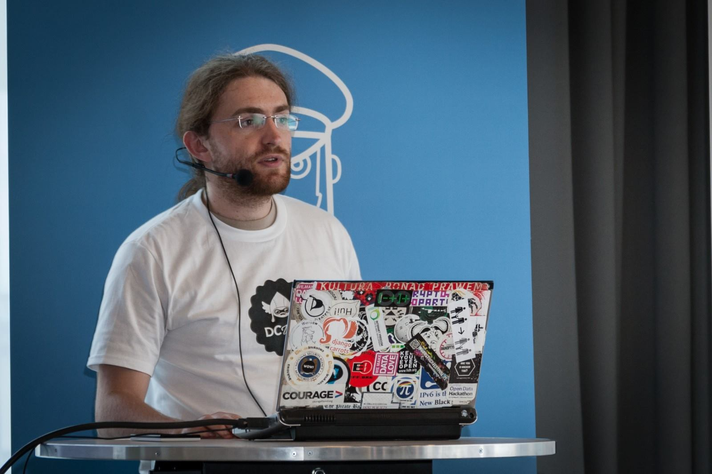
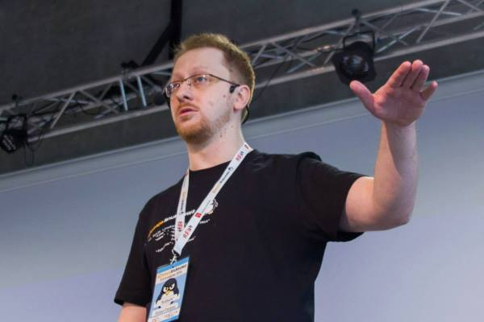
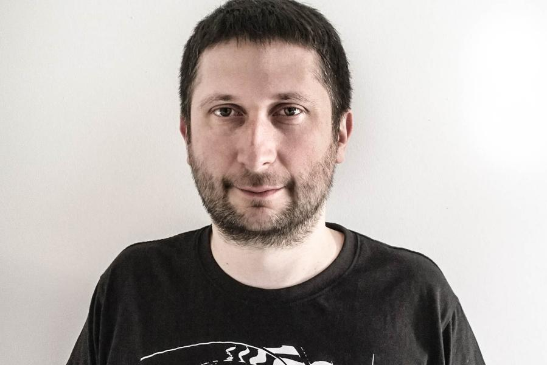
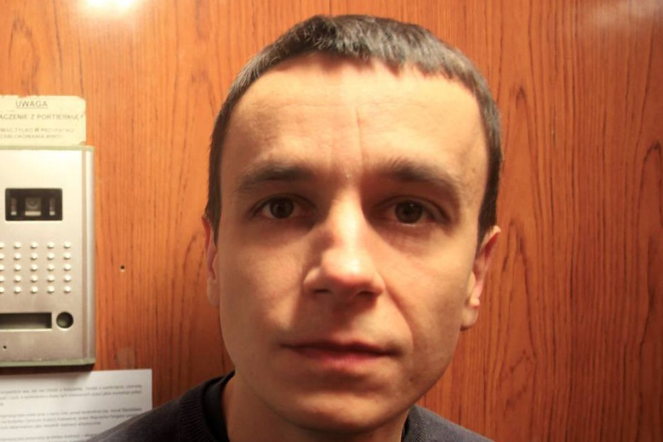
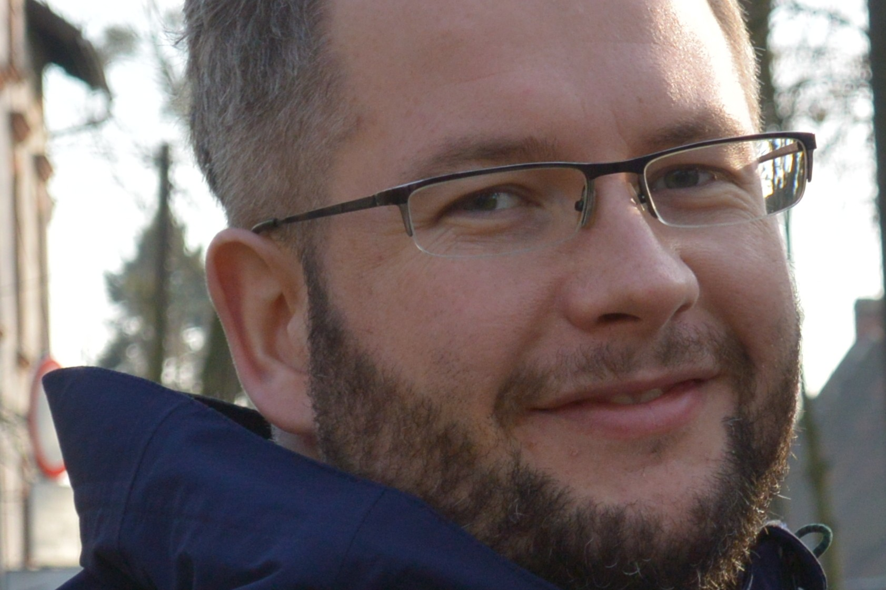
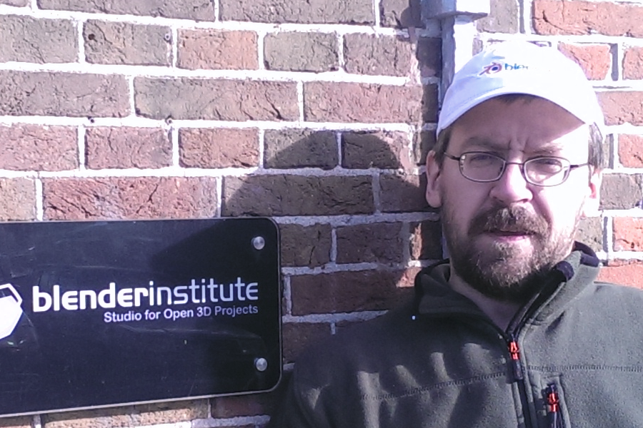
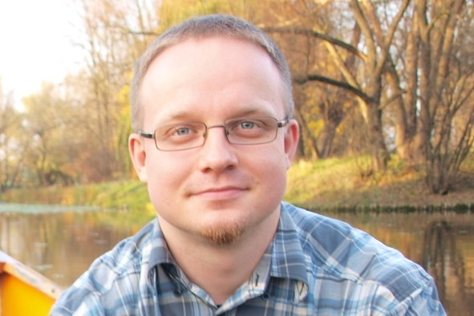
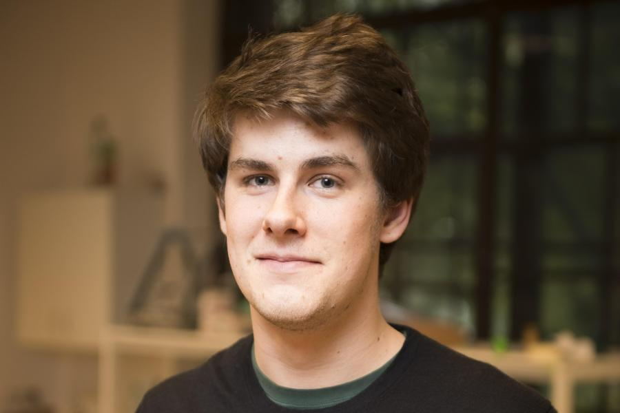
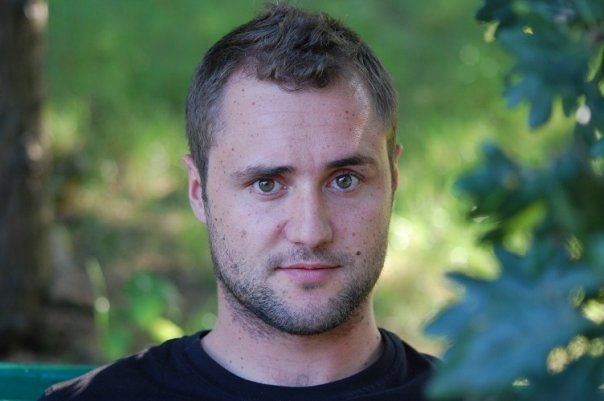
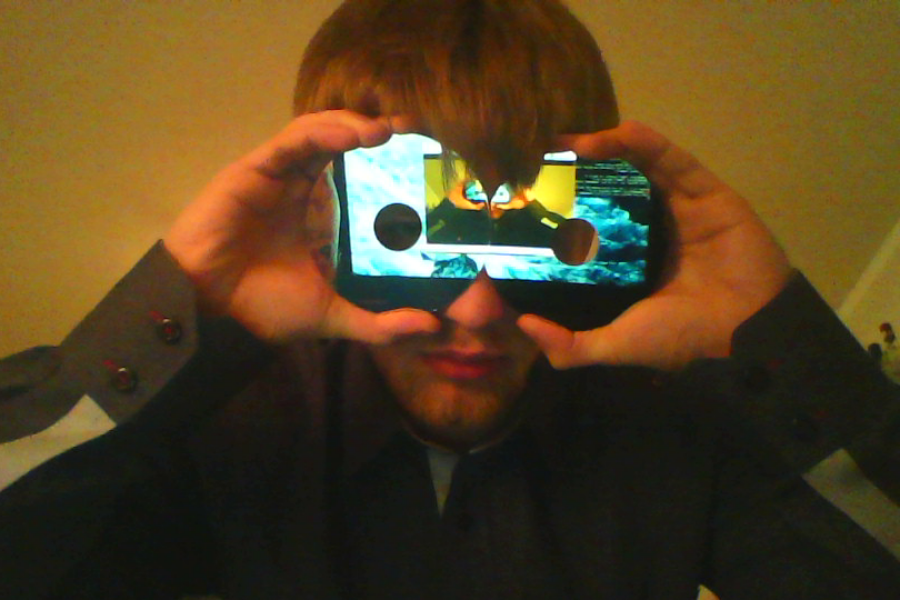

Prelegenci
Lennart Poettering
Niezwykle uzdolniony i kontrowersyjny projektant, programista i wizjoner. Od 2003 r. uczestniczył w ponad 40 projektach open source. Jest twórcą trzech podstawowych komponentów wielu dystrybucji: PulseAudio, Avahi, systemd.

Klaus Knopper
Twórca
Knoppixa - pierwszej dystrybucji typu LiveCD oraz Adriane Knoppix - systemu dla osób niewidomych i z zaburzeniami widzenia.

Maciej "docent" Lasyk
Absolwent AGH w Krakowie, administrator w firmie Lumesse w wolnym czasie rozwijający dystrybuję Fedora oraz zapalony cyklista

Michał "rysiek" Woźniak
Prezes Zarządu FWiOO, członek warszawskiego Hackerspace oraz zwolennik wolnego oprogramowania a wolnym czasie kolarz i żeglarz.

Robert "BoBsoN" Partyka
Wiceprezes Polskiej Grupy Użytkowników Linuksa. Programista, miłośnik nowych technologii oraz literatury sf&f. Kibic inicjatyw promujących otwarte standardy i wolne/otwarte oprogramowanie.
Błażej "Mewp" Święcicki
Sysadmin, programista, linuksiarz i obecny wiceprezes Akademickiego Stowarzyszenia Informatycznego. Zagorzały przeciwnik Facebooka i innych zcentralizowanych usług w chmurze.

Adam Heczko
Security Engineer w firmie Mirantis. Zawodowo zajmuje się bezpieczeństwem informacji oraz kryptografią. Entuzjasta i propagator wolnego oprogramowania. Szczęśliwy mąż i ojciec dwójki dzieci, wolny czas spędza najchętniej rodzinnie w górach.

Tomasz Wachowski
Pracuje w Techland od 2013 roku - rozpoczął jako członek zespołu Hellraid, niedługo później dołączył do zespołu Linuksowego. "Jednoosobowa armia", odpowiedzialny za proces kompilacji, system plików, dźwięku, wielowątkowość i kod gier. W wolnych chwilach studiuje informatykę na Politechnice Wrocławskiej.

Robert Zając
Projektant-grafik, współzałożyciel kolektywu kilku.com zajmującego się komunikacją wizualną i dizajnem eksperymentalnym. Współorganizator Lubelskich Spotkań Typograficznych „Typolub”. Prowadzi zajęcia z projektowania informacyjnego na Wydziale Politologii UMCS.

Marcin Tomków
Senior Administrator systemów UNIX, GNU/Linux w firmie Tieto Poland Sp z o.o. Dziewięcioletnie doświadczenie w branży IT. Entuzjasta i propagator wolnego oprogramowania. Interesuje się wykorzystaniem i implementacją nowoczesnych technologii w budowie centrum danych i administracji serwerami. Na bieżąco śledzi najnowsze trendy w tej dziedzinie. Hobbystycznie programuje na platformę Apple OS X.

Piotr Arłukowicz
Twórca Polskiego Kursu Blendera, Blender Foundation Certified Trainer,
zapaleniec-naukowiec, doktor chemii teoretycznej, grafik, animator, fan
Gwiezdnych Wojen, speedgamer oraz zdeklarowany użytkownik Wolnego
Oprogramowania. Wykładowca Roku 2015 na Uniwersytecie Gdańskim. Oprócz
zainteresowań takich jak grafika 3D, animacja, FX, tworzenie gier ostatnio
zajmuje się także drukiem 3D oraz elektroniką programowalną.

Krzysztof Adamski
Inżynier oprogramowania specjalizujący się w nispoziomowych warstwach systemów opartych o jądro Linux. Pracuje głównie z urządzeniami wbudowanymi, najczęściej opartymi na systemie Android.

Franciszek Maroszek
Członek Zarządu Stowarzyszenia Hackerspace Wrocław. Na co dzień jeździ na rowerze, studiuje mechatronikę i pracuje w firmie produkującej drukarki 3D.
Wojciech Zeler
Student informatyki na Politechnice Wrocławskiej i programista OpenGL w Techland. Autor API OpenGL w grach Dead Island i Dying Light.

Szymon Święcki
SysOp, DevOps Engineer. Gorliwy zwolennik pełnej automatyzacji. Obecnie pracuje w OVH przy projekcie SDN. Poza pracą architekt rozwiązań opartych na platformie AWS.

Adam Balawender
Student, aspirujący robotyk, aktualnie programista C w Nokia Networks. Zwolennik GNU/Linuksa i minimalistycznych rozwiązań.
Michał Giełda
Michał jest w Antmicro odpowiedzialny za kontakty z klientami i partnerami. Na co dzień zajmuje się też dokumentowaniem czego popadnie, rozpoznawaniem coraz to nowych frameworków open source oraz technologii leżących u podstaw Internet of Things - najlepiej wszystkim naraz.